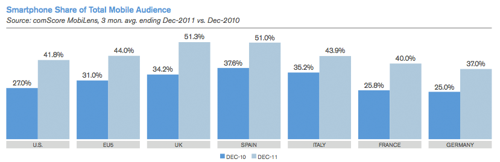
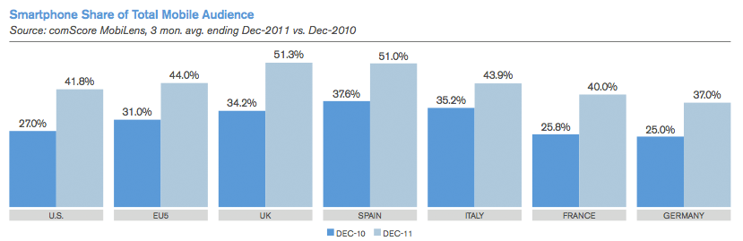

# Logfile created on Thu Aug 30 18:29:05 +0200 2012 by logger.rb/99999
D, [2012-08-30T18:29:05.638000 #1401] DEBUG -- : ********************** INICIO DEL TEST **********************
D, [2012-08-30T18:29:39.610000 #1401] DEBUG -- : Test: 1. INICIALIZACIÓN DEL SCRAPER - OK
D, [2012-08-30T18:29:56.069000 #1401] DEBUG -- : Test: 4. CAMBIO DE SUPERMERCADO - OK
D, [2012-08-30T18:30:33.765000 #1401] DEBUG -- : Test: 3. PÁGINA DE PRODUCTOS - OK
D, [2012-08-30T18:30:55.269000 #1401] DEBUG -- : Test: 4. CAMBIO DE SUPERMERCADO - OK
D, [2012-08-30T18:31:34.900000 #1401] DEBUG -- : Test: 5. PÁGINA SIGUIENTE - OK
D, [2012-08-30T18:31:56.189000 #1401] DEBUG -- : Test: 6. INDEXADO DE PRODUCTOS - OK

 
